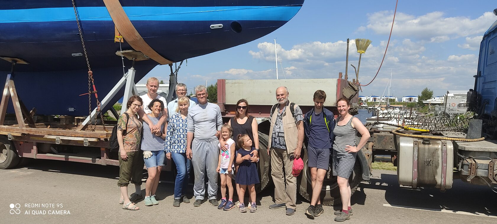
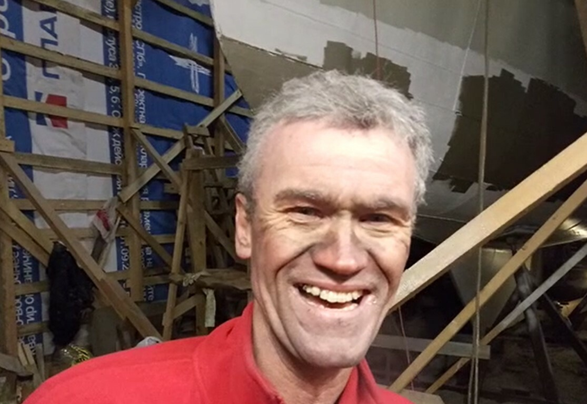

Как появляется команда
Мы
Нет, ну как так, раз - и появилась яхта, вроде понятно. В конце концов, ее можно купить за деньги, взять в аренду, получить в наследство. Но как так, вдруг бац - и появилась команда? А тоже все просто. Если есть локомотив, вагончики подъедут. Или непросто? Ведь команда - это люди, с которыми ты находишься в море в очень ограниченном пространстве, испытываешь трудности, делишься радостями. Иногда самыми простыми радостями: "ребята, я сварил вам очень вкусный сладкий компот, но на забортной воде". Как мило! За Гогландом вода вполне уже себе морская, соленая. Потом ребенок напишет это в школьном сочинении. Встречаешь рассветы, провожаешь закаты и, извиняюсь, блюешь с одного борта тоже вместе. Мы компания людей единомышленников. Нас связывает только одно - желание путешествовать по морю. Мы любим море и любим путешествовать.
Ах да - никто из нас не наследный принц, не шейх, ну и так далее. И яхта тоже не свалилась с неба. Волею судеб мы встретились в яхт-клубе когда-то давно и с тех пор нам по пути.

А локомотив наш - Николай Макаров (он же Коля, он же Капитан, он же Зеверюга). Он тянет все основные тяготы и лишения судовладельчества.

Наша задача ему помогать. "Кто с хлебом, кто с продуктами..."
Кто то увидел объявление в интернете, кого то пригласил друг или недруг, кто то мимо проходил. А потом обнаруживаешь себя посреди Балтики и недоумеваешь - как я тут оказался? Люди приходят и уходят. Разные бывают жизненные обстоятельства.
Основная часть коллектива сложилась довольно давно. Кое-кто ходил еще на профсоюзной яхте класса Л6 "Урал" в доисторические времена. Но большая часть компании бороздила моря на следующей яхте - двухмачтовой "Катти". Прослужила нам Катти (Катюшка) верою и правдою целых 18 лет. Но уже во времена Катюшки было принято решение строить стальной Эридан. На Катти ходили и Эридан строили. Ох, молодость, молодость, столько сил!